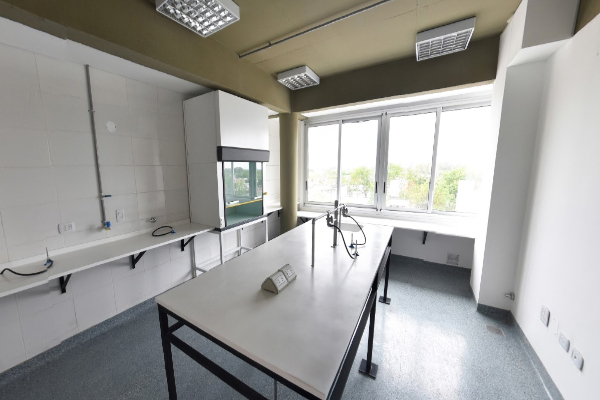
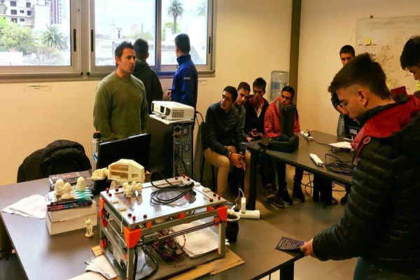
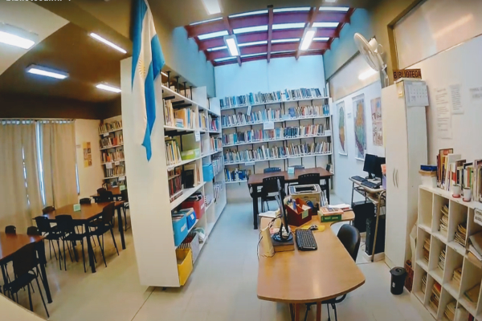

Universidad Autonoma de Entre Rios
Facultad de Ciencia y Tecnología



PROFESORADOS
Profesorado en Matemática
Duración: 4 años- Planificar, conducir y evaluar los procesos de enseñanza y aprendizaje vinculados a la Matemática en EGB 3, en Polimodal osus equivalentes y en el Nivel Superior.
- Asesorar en lo concerniente al proceso de enseñanza y aprendizaje en lo relacionado con el área de conocimiento específico.
- Participar en equipos de investigación del área epistemológica
- Participar en equipos de investigación interdisciplinaria y educativa
Profesorado en Física
Duración: 4 años- Planificar, conducir y evaluar los procesos de enseñanza y aprendizaje vinculados a las Ciencias Naturales en EGB 3 y en la Física, en Polimodal o sus equivalentes y en el Nivel Superior Universitario
- Asesorar en lo concerniente al proceso de enseñanza y aprendizaje en lo relacionado con el área de conocimiento específico.
- Participar en equipos de investigación del área epistemológica
- Participar en equipos de investigación interdisciplinario y educativo
Profesorado en Química
Duración: 4 años- Planificar, conducir y evaluar los procesos de enseñanza y aprendizaje vinculados a las Ciencias Naturales en EGB 3 y en la Química, en Polimodal osus equivalentes y en el Nivel Superior.
- Asesorar en lo concerniente al proceso de enseñanza y aprendizaje en lo relacionado conel área de conocimiento específico.
- Participar en equipos de investigación del área epistemológica
- Participar en equipos de investigación interdisciplinario y educativo
Profesorado de Biología
Duración: 4 años- Planificar, conducir y evaluar los procesos de enseñanza y aprendizaje vinculados a las Ciencias Naturales en EGB 3 y en la Biología, en Polimodal o sus equivalentes y en el Nivel Superior.
- Asesorar en lo concerniente al proceso de enseñanza y aprendizaje en lo relacionado con el área de conocimiento específico.
- Participar en equipos de investigación del área epistemológica
- Participar en equipos de investigación interdisciplinaria y educativa
Lic. en Salud Ambiental
Duración: 5 años- abordar integralmente los determinantes de la salud ambiental
- generar, programar y/o participar en actividades de investigación en temas de salud ambiental
- Desarrollar actividades de educación ambiental y difundir sus principios con el fin de promover ambientes saludables
- Integrar, coordinar y/o supervisar equipos interdisciplinarios para la elaboración de estudios ambientales
- Programar, ejecutar y/o asesorar en lo concerniente a servicios de atención primaria ambiental
- Programar, gestionar, ejecutar y/ evaluar estudios de epidemiología ambiental
- Programar, realizar y/o evaluar planes de gestión ambiental ante situaciones de desastres
- Proyectora y/o ejecutar planes de manejo ambiental requeridos en proyectos ejecutivos integrales de pliegos para obras civiles e industriales – actividades para las cuales está capacitado de intervenir integrando equipos interdisciplinarios
- Integrar, coordinar y/o supervisar equipos que planifiquen, programen, diseñen, gestionen y evalúen los procesos involucrados en los sistemas de manejo y tratamiento de residuos sólidos urbanos, patogénicos e industriales
- Integrar, coordinar y/o supervisar equipos que planifiquen, programen, diseñen, gestionen y evalúen los procesos involucrados en los sistemas de abastecimiento de agua potable, urbanas, periurbanas y rurales
- Integrar, coordinar y/o supervisar equipos que planifiquen, programen, diseñen, gestionen y evalúen los procesos involucrados en los sistemas de tratamiento de efluentes cloacales y/o industriales
- Integrar equipos que aborden la Atención Primaria de la Salud
- Asesorar en la implementación de normas ambientales y sistemas de calidad
- Asesorar en lo concerniente al ordenamiento ambiental de territorio
- Identificar y proponer soluciones ante situaciones de deterioro de recursos naturales que puedan generar situaciones de riesgo y vulnerabilidad para las comunidades y salud de las personas
- Integrar equipos que aborden las problemáticas ambientales de cambio climático
- Integrar equipos que promuevan la calidad de vida desde el enfoque de la sostenibilidad ambiental
- Participar en la determinación de las condiciones de higiene y seguridad laboral e higiene y seguridad ambiental
- Participar o asesorar en la elaboración de normas y legislaciones relativas a la salud ambiental
TECNICATURAS
Tec. en Automatización y Control de Procesos Industriales
Duración: 3 años- Colaborar en la operación, mantenimiento, instalación y puesta a punto de sistemas de control de procesos industriales y sistemas de procesamiento de la información, bajo la supervisión del profesional del área.
- Participar en el mantenimiento, desarrollo, producción de dispositivos, equipos y sistemas de control de máquinas industriales y de otras aplicaciones de control de procesos industriales, bajo la supervisión del Profesional del área.
- Colaborar como Auxiliar de laboratorios de investigación aplicada y desarrollo.
- Participar como Auxiliar de proyecto, instalación y puesta a punto de sistemas de control de procesos industriales.
- Operar en tareas de supervisión o control de procesos industriales en plantas de proceso continuo y de máquinas industriales en plantas de producción por lotes.
- Asistir como operador de sistemas de procesamiento de la información al profesional del área.
- Colaborar en la supervisión de líneas de montaje y producción en los sistemas de control de máquinas industriales y sistemas de control de sistemas industriales, bajo la supervisión del profesional del área.
Analisis de Sistemas
Duración: 3 años- Participar en grupos liderados por Licenciados/Ingenieros en Sistemas para la realización de diagnósticos de necesidades de información, diseñote nuevos sistemas y/o modificación de los existentes en una organización pública o privada.
- Participar bajo la dirección del Licenciado/Ingeniero en Sistemas del elevamiento, especificación, diseño, implementación, prueba, mantenimiento y control de calidad de sistemas de información.
- Realizar la codificación de rutinas de software, según las especificaciones elaboradas en la fase de diseño.
- Documentar y actualizar la carpeta de sistemas y los manuales conexos.
- Participar de los estudios de factibilidad y/o referentes a la configuración y demensionamiento de los sistemas de procesamiento de información.
- Realizar la capacitación al personal que utiliza los sistemas.
- Asistir al Licenciado/Ingeniero en Sistemas en el análisis y evaluación de proyectos de especificación, diseño, implementación, verificación, puesta a punto, mantenimiento y actualización de sistemas de procesamiento de datos.
LICENCIATURAS
Licenciatura en Sistemas de Información
Duración: 5 años- Planificar, dirigir, realizar y/o evaluar proyectos de relevamiento de problemas del mundo real. Especificación formal, diseño, implementación, prueba, verificación, validación, mantenimiento y control de calidad de sistemas de software que se ejecuten sobre sistemas de procesamiento de datos.
- Organizar, dirigir y controlar las áreas informáticas de las organizaciones, seleccionando y capacitando al personal técnico de los mismos.
- Dirigir el relevamiento y análisis de los procesos funcionales de una Organización, con la finalidad de dirigir proyectos de diseño de Sistemas de Información asociados, así como los Sistemas de Software que hagan a su funcionamiento. Determinar, regular y administrar las pautas operativas y reglas de control que hacen al funcionamiento de las áreas informáticas de las empresas y organizaciones.
- Entender, planificar y/o participar de los estudios técnicos-económicos de factibilidad y/o referentes a la configuración y dimensionamiento de sistemas de procesamiento de información. Supervisar la implantación de los sistemas de información y organizar y capacitar al personal afectado por dichos sistemas.
- Establecer métricas y normas de calidad y seguridad de software, controlando las mismas a fin de tener un producto industrial que respete las normas nacionales e internacionales. Control de la especificación formal del producto, del proceso de diseño, desarrollo, implementación y mantenimiento. Establecimiento de métricas de validación y certificación de calidad.
- Planificar, dirigir, realizar y/o evaluar los sistemas de seguridad en el almacenamiento y procesamiento de la información. Realizar la especificación, diseño, desarrollo, implementación y mantenimiento de los componentes de seguridad de información embebidos en los sistemas físicos y en los sistemas de software de aplicación. Establecer y controlar las metodologías de procesamiento de datos orientadas a seguridad, incluyendo data-warehousing.
- Efectuar las tareas de Auditoría de los Sistemas Informáticos. Realizar arbitrajes, pericias y tasaciones relacionados con los Sistemas Informáticos.
- Planificar, dirigir, realizar y/o evaluar proyectos de sistemas de administración de recursos. Especificación formal de los mismos, diseño, implementación, prueba, verificación, validación, mantenimiento y control de eficiencia/ calidad de los sistemas de administración de recursos que se implanten como software sobre sistemas de procesamiento de datos.
- Analizar y evaluar proyectos de especificación, diseño, implementación, verificación, puesta a punto, mantenimiento y actualización de sistemas de procesamiento de datos.
- Analizar y evaluar proyectos de especificación, diseño, implementación, verificación, puesta a punto y mantenimiento de redes de comunicaciones que vinculen sistemas de procesamiento de datos.
- Realizar tareas como docente universitario en Informática en todos los niveles, de acuerdo a la jerarquía de título de grado máximo. Realizar tareas de enseñanza de la especialidad en todos los niveles educativos. Planificar y desarrollar cursos de actualización profesional y capacitación en general en Sistemas/Sistemas de Información.
- Realizar tareas de investigación científica básica y aplicada en temas de Sistemas de Software y Sistemas de Información, participando como Becario, Docente-Investigador o Investigador Científico/ Tecnológico. Dirigir Proyectos, Laboratorios, Centros e Institutos de Investigación y Desarrollo en Informática orientados a las áreas de Sistemas/ Sistemas de Información.
Lic. en Automatización y Control de Procesos Industriales
Duración: 4 años- Colaborar en la evaluación y selección de los equipos de sistemas de automatización de máquinas y sistemas de control de procesos industriales y sistemas de procesamiento de la información.
- Colaborar en la dirección y supervisión de proyectos de sistemas de automatización de máquinas y sistemas de control de procesos industriales y sistemas de procesamiento de la información.
- Asistir en la realización de arbitrajes, pericias y tasaciones relacionadas con los sistemas de automatización de máquinas y sistemas de control de procesos industriales.
- Realizar estudios e investigaciones que conduzcan al diseño, proyecto, construcción de sistemas de automatización de máquinas y sistemas de control de procesos industriales y sistemas de procesamiento de la información, al mejoramiento en el desarrollo de los mismos, y a nuevas aplicaciones de la tecnología existente.
- Organizar el área de mantenimiento, determinar los recursos humanos necesarios en dicha área, y contribuir a su selección y formación.
- Colaborar en la planificación y evaluación de los estudios de factibilidad inherentes a todo proyecto de diseño de sistemas de automatización de máquinas y sistemas de control de procesos industriales y sistemas de procesamiento de la información y de modificación o reemplazo de los mismos.
INGENIERIA
Ingeniería en Telecomunicaciones
Duración: 3 añosPlanificación, dirección, construcción, instalación, puesta en marcha, operación, ensayos, mediciones, mantenimiento, reparación, modificación, transformación e inspección. Estudios de fiabilidad, control de calidad y certificación. Estudios de factibilidad y evaluación de proyectos de inversión. Diseños de marcos regulatorios en todo lo relativo a:
- Servicios de Telecomunicación.
- Servicios de Radiocomunicaciones.
- Sistemas de Telecomunicaciones para Procesos y Automatización Industrial.
- Servicios Telemáticos.
- Sistemas de Sonido e Imagen.
- Sistemas de recepción y transmisión, procesamiento y utilización de señales de comunicación en todas las frecuencias y potencias, audio, video, datos y otros tipos de señales.
- Radiodeterminación.
- Sistemas de ayuda a la navegación aérea, terrestre y marítima.
Estudios, tareas y asesoramientos relacionados con:
- Asuntos de Ingeniería Legal, Económica y Financiera relacionados con los incisos anteriores.
- Arbitrajes, auditorias, pericias y tasaciones relacionados con los incisos anteriores
- Higiene, Seguridad Industrial y contaminación Ambiental relacionados con los incisos anteriores.